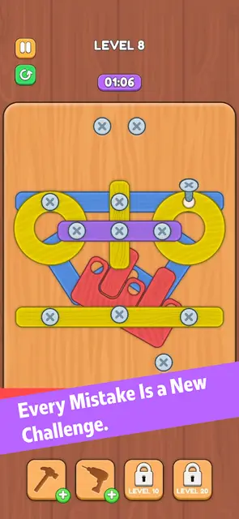
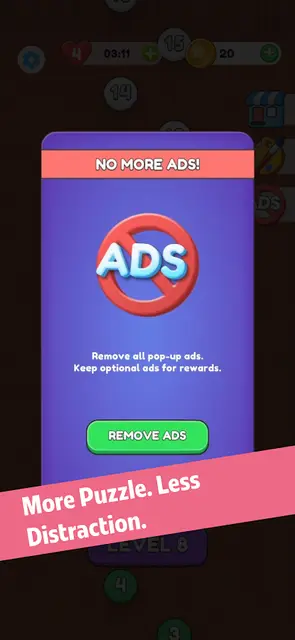
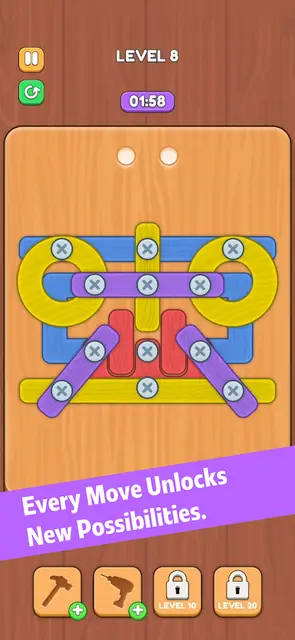

LOGIC PUZZLE GAME · ANDROID · GAMEFUSION STUDIO
Screw Puzzle: A satisfying screw and bolt brain teaser
Screw Puzzle (Screw Master Puzzle) is a free screw and bolt removal brain game for Android. Unscrew bolts in the right order to free wooden pieces, across hundreds of logic puzzle levels.
- 💰 Free
- 👪 Rated 3+
- 📱 Android
Contains ads · In-app purchases



About Screw Puzzle
Screw Puzzle (also called Screw Master Puzzle) is a satisfying logic game where you unscrew bolts in the right order to free wooden pieces from the board. It looks simple, but one wrong move can lock a piece in place, so every level is a real brain teaser.
With a relaxing wooden puzzle theme, easy tap controls and hundreds of levels that get trickier as you go, it's perfect for quick breaks or longer puzzle sessions.
How to play Screw Puzzle
- Look carefully at how the wooden pieces, screws and bolts overlap.
- Tap a screw to remove it and move it to a free hole.
- Remove screws in the correct order so pieces can fall away.
- Avoid moves that block other pieces, and clear the whole board to win.
Features
- Unique screw and bolt removal puzzle mechanics
- Hundreds of brain-teasing levels
- Easy, satisfying tap controls
- Relaxing wooden puzzle theme
- Difficulty that grows as you improve
- Regular updates with new levels
- Great for logic and critical thinking
- Suitable for all ages
Tips to beat more levels
- Start with the top layer. Pieces on top often hold everything below them in place.
- Don't fill your free holes too fast. Keeping empty spots gives you room to fix mistakes.
- Trace each piece before tapping: which screws actually hold it, and which are decoys?
- Stuck? Restart and change your first few moves. The opening order usually decides the level.
Why you'll enjoy it
Screw puzzles combine the satisfaction of a mechanical puzzle with real strategy. They're quick to understand, oddly relaxing to play, and give you a genuine "aha!" moment when a tricky board finally clears.
Ready to play? Screw Puzzle is free on Google Play.
GET IT ONGoogle PlayFrequently asked questions
Is Screw Puzzle free?
Yes, Screw Puzzle is free to download and play on Android. It contains ads and optional in-app purchases.
How do you play a screw puzzle game?
Tap screws to remove them in the right order so the wooden pieces they hold can fall off the board. Clear every piece to finish the level.
Is Screw Puzzle hard?
Early levels are easy to learn, and the puzzles get more complex as you progress, so it suits both beginners and puzzle fans.
Is it suitable for kids?
Yes. Screw Puzzle is rated 3+ on Google Play.
Where can I download Screw Puzzle?
Screw Puzzle is available on the Google Play Store for Android.